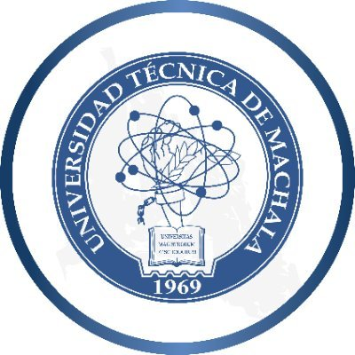

UNIVERSIDAD TÉCNICA DE MACHALA
CIENCIAS SOCIALES
PEDAGOGÍA DE LAS CIENCIAS EXPERIMENTALES
CÁTEDRA INTEGRADORA: DISEÑO Y GESTIÓN
DE AMBIENTES DE APRENDIZAJE
PORTAFOLIO ESTUDIANTIL
CRISTHIAN DAVID CASTRO CABRERA
DOCENTE
OSCAR GEOVANNY RIOGRIO OROZCO
2023